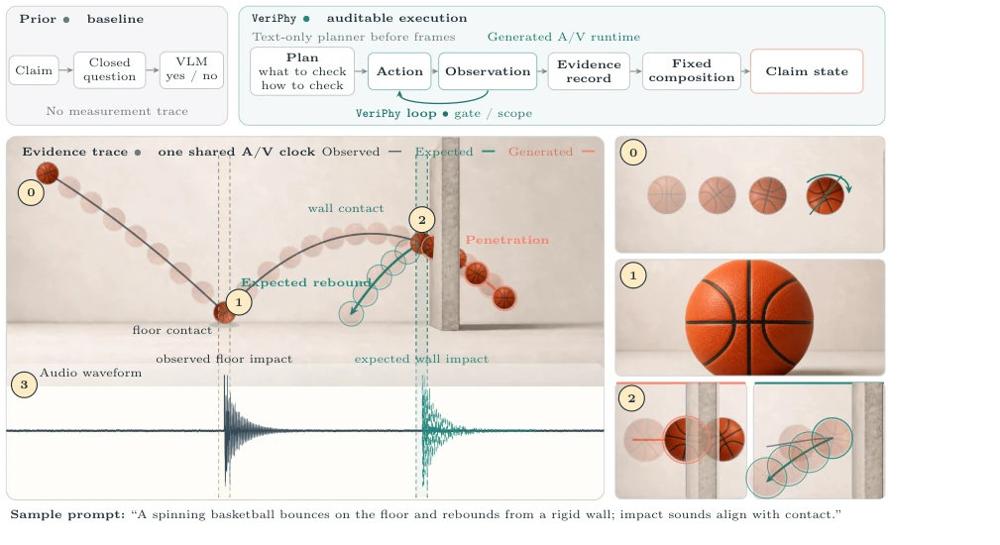
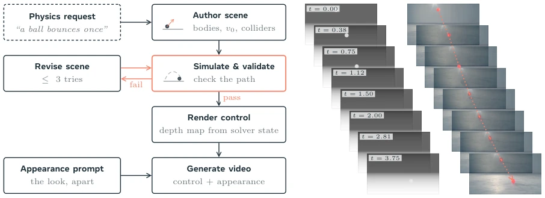
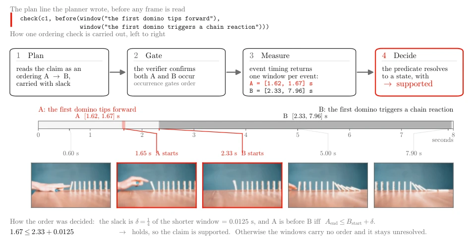
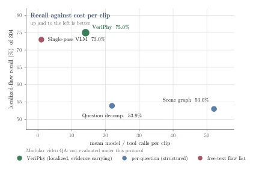
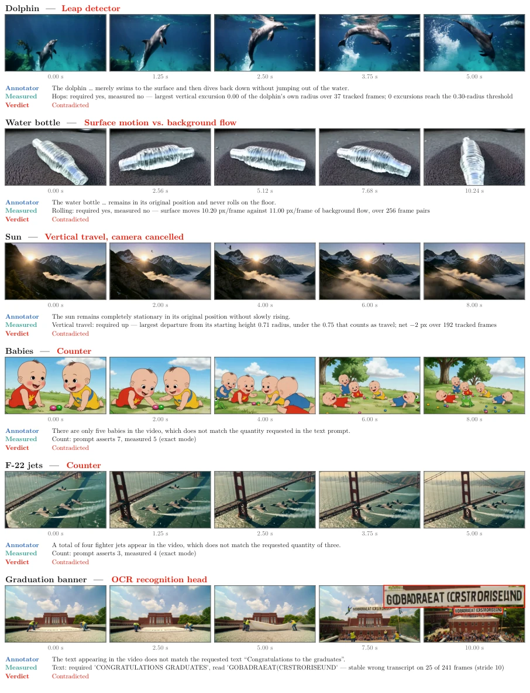
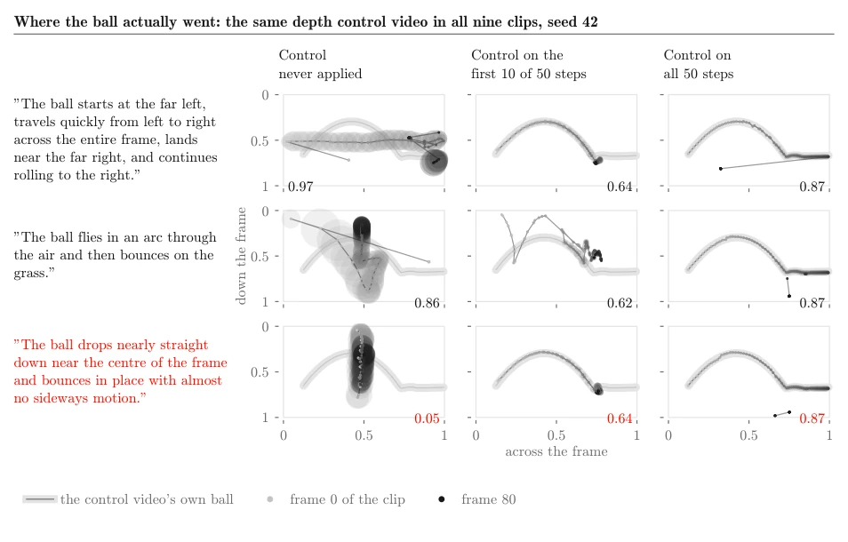
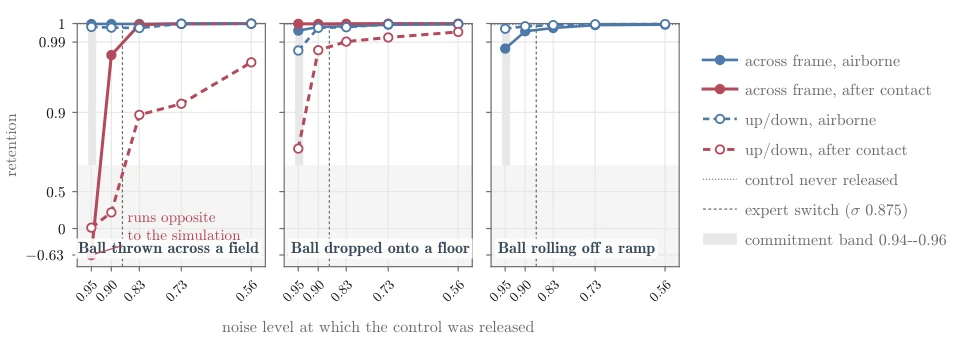
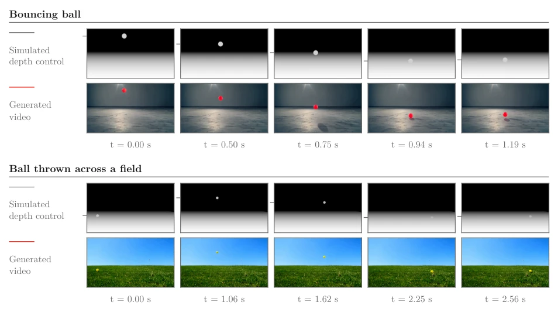
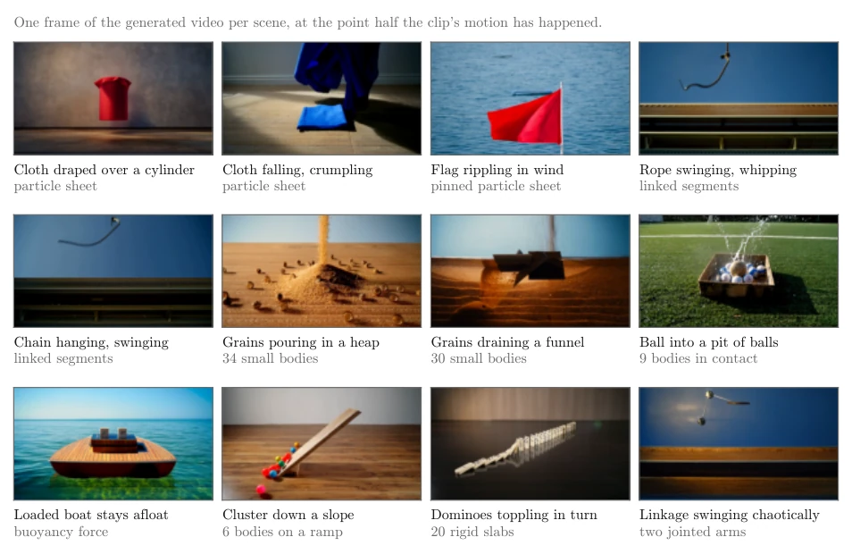
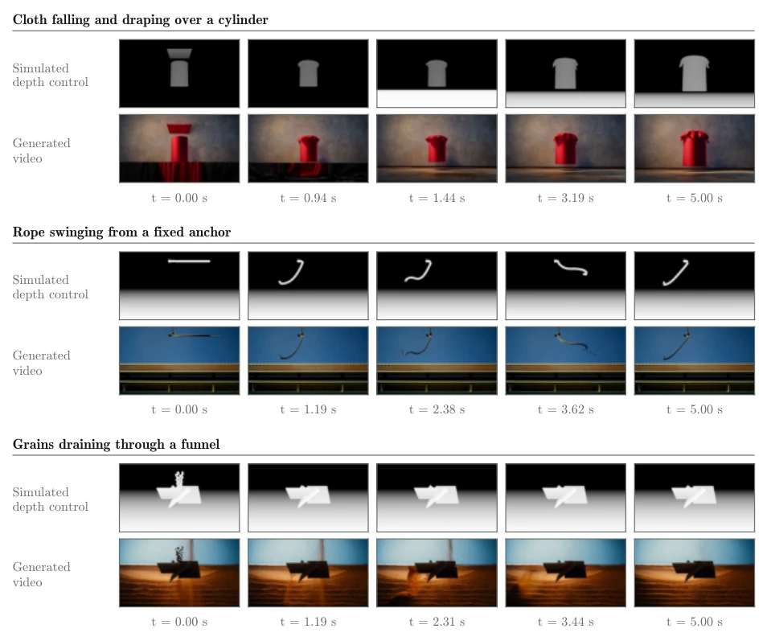

This VeriPhy work attempts to equip video generation with a "physical autopsy examiner", with a focus on "auditability". The highlight lies in the rigorous "plan-then-execute" chain, compiling physical obligations into typed plans and executing them via frozen experts, ensuring traceable evidence. However, the authors honestly admit that regarding recall rate alone, there is no essential difference compared to directly prompting the same backbone model (228 vs 222); the core advantage is "auditability" rather than mere performance. For embodied intelligence training, this "simulation control + generation" decoupling design is clever, but reliance on frozen experts (e.g., SAM3) may fail to cover complex physical interactions, and the 2026 date suggests this is more of a preview for a future framework, requiring consideration of actual deployment costs.
Video generation appears smooth, yet physics often collapses (e.g., wall clipping, gravity failure). Existing evaluations mostly rely on scalar scores or VLM black-box judgments, lacking an evidence chain [3, 4]. Embodied intelligence requires physically correct training data, but existing evaluators (e.g., AV-Phys Agent [14]) remain bound to specific prompts or manual rules, unable to integrate multimodal evidence into a single audit chain. VeriPhy aims to address this integration gap, ensuring every judgment can be traced back to specific evidence rather than disordered model responses, bridging the gap from visual smoothness to physical reliability.

Figure 1 Overview of VeriPhy relative to question decomposition. The numbered views magnify rotation, floor-contact deformation, generated wall penetration, and the counterfactual rigid-wall rebound; the waveform shares the visual event clock. The scene is illustrative rather than a recorded execution.
Overall divided into two stages: generation and evaluation. The generation stage utilizes MuJoCo simulation to generate depth control, conditioning the Wan 2.2-VACE model [33, 71] to achieve motion and appearance decoupling. The evaluation stage of VeriPhy includes four roles: the Text Planner compiles prompts into typed physical obligations and static verification plans; the Executor calls frozen experts in topological order (SAM3 segmentation, TAPNext++ trajectories, OCR, etc.); the Evidence Recorder carries source and status; the Aggregator maps evidence to support/contradict/unknown ternary judgments via fixed rules. The core innovation is "plan before observation", where all tool calls must be declared in the plan, and observations serve only as gating, ensuring traceability.

Figure 2 Physics-guided generation. A physics request becomes a scene that is simulated and validated, revising on failure (red loop); the validated motion is a depth control that, with an appearance prompt, conditions the generator. Right: depth control and generated clip at matched timestamps, tracing the ball’s path.

Figure 3 A real temporal trace. The planner writes the line before reading any frame. The verifier first confirms both events, the timing actions then return WA = [1.62, 1.67] s and WB = [2.33, 7.96] s, and (13) resolves their order. Every number and displayed frame comes from the recorded run.
Constructed a corpus of 1500 clips, containing 2582 manually annotated defect records. The core set comprises 149 clips and 304 defects. VeriPhy achieved a recall of 228, outperforming the Question-Decomposition baseline (164) and approaching the single block Prompt (222). Key findings indicate that control withdrawal points (Fig 5) affect motion commitment, and VeriPhy can provide spatiotemporally localized contradiction packages (Fig 10). However, evaluation is based solely on recall, generalization is not verified, and infrastructure errors require separate handling.

Figure 9 Localized flaw recall vs. cost per evaluator, over the same 149 clips and 304 flaws (Section 5.1.2). Horizontal axis: mean model and tool calls per clip; vertical: recall. Up-and-left is better. Full comparison: Table 8 in Section A.6.

Figure 10 Six flaws identified through specialist measurement, one per row. Each row gives the specialist that answered, a five-frame filmstrip sampled uniformly across the clip, the human annotator’s sentence verbatim, the specialist’s own required-versus-measured pair with its evidence, and the resulting claim state. Displacements are normalized by the subject’s radius, so no scene calibration is required. In the text case, the boxed banner region of the last frame is magnified in place, showing the render’s own glyphs. Measurement text is copied from the run’s records.
其他图片Other Figures

Figure 4 Tracked ball path in nine clips at one seed, against the same depth control throughout. Each box is a single 848 × 480 frame, x left to right and y downward; each dot is one frame, sized by the tracked region’s area and shaded from first frame to last. The pale band is the control video’s ball, in frame for 63 of its 81 frames; the number in each box is that clip’s sideways travel. The three prompts differ only in the closing sentence beside each row; the red row asks for the motion the control does not perform. Without the control the path follows the clause and the framing shifts with it; with the control throughout, all three clauses reproduce its arc; with the control over the first ten steps the path holds the arc and departs at the landing.

Figure 5 The release-point sweep: one clip per point, three scenes (including a ball rolling off a ramp), scored separately over the airborne window and the window after the simulated object first reaches the ground. The horizontal axis is the noise level at which the control was switched off, high noise on the left. Colour marks the window (blue airborne, rose after contact) and line style the axis (solid across-frame, dashed up/down); retention is the correlation between the generated object’s tracked path and the simulation’s, defined in the text. The thrown ball’s after-contact agreement falls below the threshold in both directions at the earliest withdrawal, and the vertical component is the later of the two to recover. Guides mark the commitment band and the backbone’s expert switch;

Figure 6 The same mechanism across two scenes with very different requested appearance—an indoor studio and an outdoor field—each shown as its depth control above and the resulting generated clip below. Timestamps are per scene, chosen from the turning points of its tracked vertical path, so each column falls within a moving interval. Appearance changes completely with the prompt while the motion stays the simulation’s: for the thrown ball the generated and control paths agree to a correlation of 1.0000 horizontally and 0.9998 vertically, with a median disagreement of 0.7 pixels across and 1.1 pixels down, over the 63 frames in which the ball is measurable in both before it leaves the frame.

Figure 7 Twelve of the 66 scene kinds, one generated frame each. Each tile is selected by rule: frame-to-frame change is accumulated over the clip and the tile is the frame by which half the total has occurred, which falls during the scene’s principal motion rather than its start. The second caption line names the physics primitive, and every body count in it is the scene’s own parameter. Each clip’s simulation passed the inspection described in the text, and the tiles were additionally inspected manually.

Figure 8 Three deformable and granular scenes, each with simulated depth control above and generated clip below, at matched timestamps. Columns are placed at equal steps of the clip’s accumulated change, so none falls in a temporally static interval. Pairs are shown only for scenes whose depth control remains distinguishable from its background in every column; an object that settles onto the floor takes the same grey as the floor and leaves the control blank.